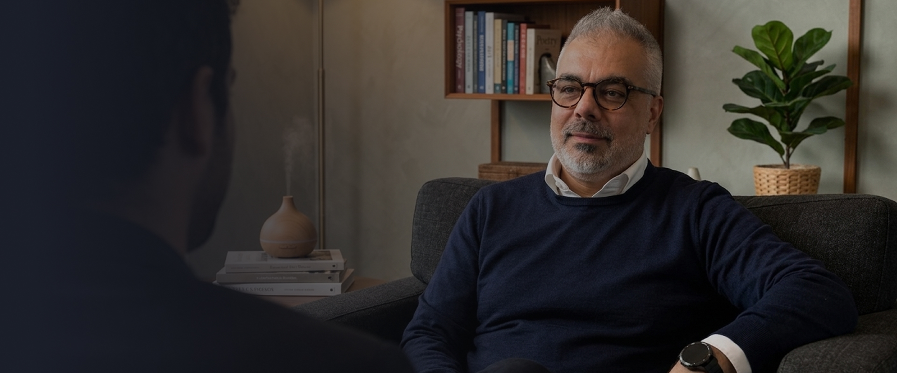
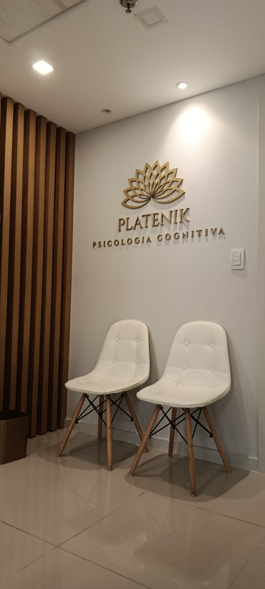
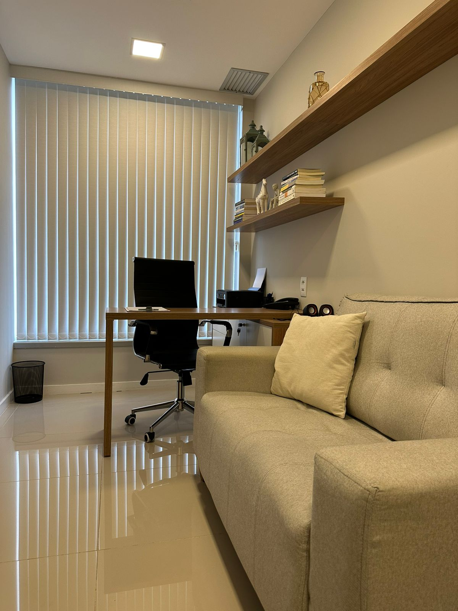
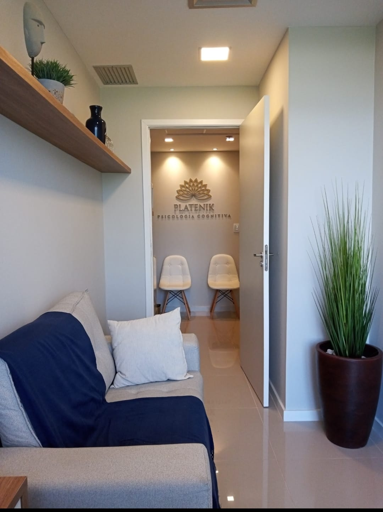
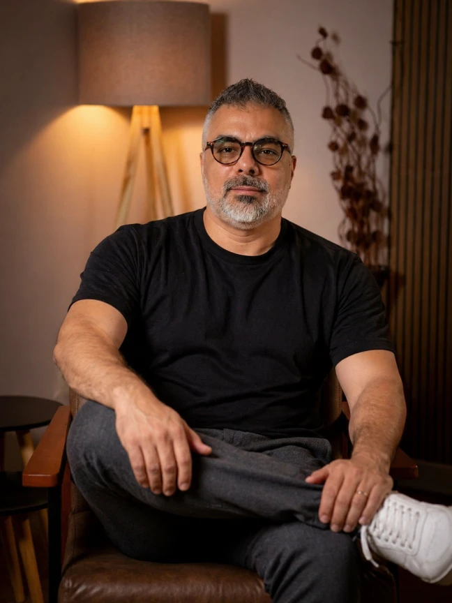

Psicólogo na Barra da Tijuca, especialista em TCC.
Sessões presenciais na Barra da Tijuca com foco em performance, clareza mental e resultados concretos. Para empresários e profissionais que não têm tempo a perder.
Atendimento presencial · Consultas particulares
Resultados que você vai sentir fora do consultório.
Cada sessão é construída com objetivo claro. Não é conversa por conversa. É um processo direto, orientado para o que realmente trava seu desempenho.
Foco que não cede sob pressão
Você aprende a manter a concentração mesmo nos dias de maior demanda. Ciro trabalha os gatilhos específicos que dispersam sua atenção e constrói estratégias personalizadas para o seu contexto.
Zero procrastinação nas decisões
Entenda o que está por trás da postergação e dissolva esse padrão na raiz. O trabalho com TCC identifica os bloqueios cognitivos que sabotam sua produtividade antes que eles atuem.
Autoridade e clareza em ambientes
Em reuniões difíceis, negociações e conflitos com sócios ou equipe, você desenvolve a estabilidade emocional para decidir com lucidez mesmo quando o cenário é adverso.
Relações profissionais estratégicas
Liderança, comunicação e conflito têm raízes psicológicas. Ciro ajuda você a entender seus padrões relacionais e a transformá-los em vantagem competitiva.
Performance sustentável
Alta performance não é velocidade máxima o tempo todo. Você aprende a calibrar energia, reconhecer limites e construir uma rotina de alto rendimento que não te quebra.
Evolução mensurável
Cada sessão tem direção. Você sai de cada atendimento com algo concreto para aplicar, sem ficar apenas em reflexões.
O que meus pacientes.
Opiniões de quem já viveu o atendimento na prática.
"Fui ao Ciro passando por um momento difícil na empresa. Em poucas semanas comecei a enxergar as situações de um ângulo diferente. A objetividade das sessões é o que mais me surpreendeu."
"Profissional extremamente competente. Cada sessão termina com algo prático para levar. Não é aquela terapia que você sai sem saber o que fez. Tem direção, tem evolução."
"Procurei o Ciro por indicação e foi uma das melhores decisões que tomei. Ele consegue ir direto ao ponto sem perder a sensibilidade. Meu desempenho melhorou de forma notável."
TCC: a ciência por trás de resultados reais.
A Terapia Cognitivo-Comportamental não é conversa. É método.
O que é a TCC?
A TCC é uma abordagem baseada em evidências científicas: a forma como você pensa influencia como você sente e age. Orientada para o presente e para o futuro, com metas claras e resultados mensuráveis.
Como funciona na prática?
Identificamos os padrões de pensamento que geram respostas disfuncionais. A partir daí, trabalhamos para reestruturar esses padrões por respostas mais conscientes e eficazes.
Mapeamento
Identificamos juntos os pensamentos automáticos e crenças que limitam sua performance.
Questionamento
Examinamos a validade desses pensamentos e desenvolvemos perspectivas mais funcionais.
Ação
Cada sessão termina com ferramentas práticas para aplicar imediatamente no mundo real.
Consolidação
Os novos padrões se tornam automáticos. Você sai melhor do que entrou.
"A TCC conta com mais de 2.000 estudos clínicos que comprovam sua eficácia... É a abordagem recomendada pela OMS."
Um espaço feito para pensar com clareza.
Localizado no coração da Barra da Tijuca, o consultório oferece um ambiente discreto, reservado e de fácil acesso, para que a sessão seja o menor atrito possível na sua agenda.
Ver rota



10 anos de experiência em psicoterapia para quem busca clareza, equilíbrio e mudança real.
Ciro Platenik é psicólogo clínico especializado em Terapia Cognitivo-Comportamental, com mais de 10 anos de experiência e mais de 15.000 atendimentos realizados.
Seu trabalho é voltado para pessoas que enfrentam desafios emocionais, profissionais ou de relacionamento e buscam um acompanhamento prático, seguro e bem direcionado.
A proposta é oferecer um espaço de escuta, reflexão e orientação, ajudando cada paciente a compreender melhor seus padrões, lidar com suas dificuldades e construir mudanças possíveis no dia a dia.
Atendimento particular com foco em acolhimento, clareza e evolução a cada sessão.
Método TCC
Abordagem estruturada, com técnicas comprovadas para mudança de padrões de pensamento.
Foco em evolução
Cada atendimento tem um objetivo. Você saberá exatamente o que trabalhou e o que leva consigo.
Pragmatismo
O objetivo é tirar você do problema o mais rápido possível, sem prolongar o processo.
Atendimento exclusivo
Sem convênio, sem fila, sem pressa. Você tem atenção total na Barra da Tijuca.
Pronto para transformar sua performance mental?
Agende uma sessão estratégica com Ciro Platenik e comece a construir resultados reais através da TCC.